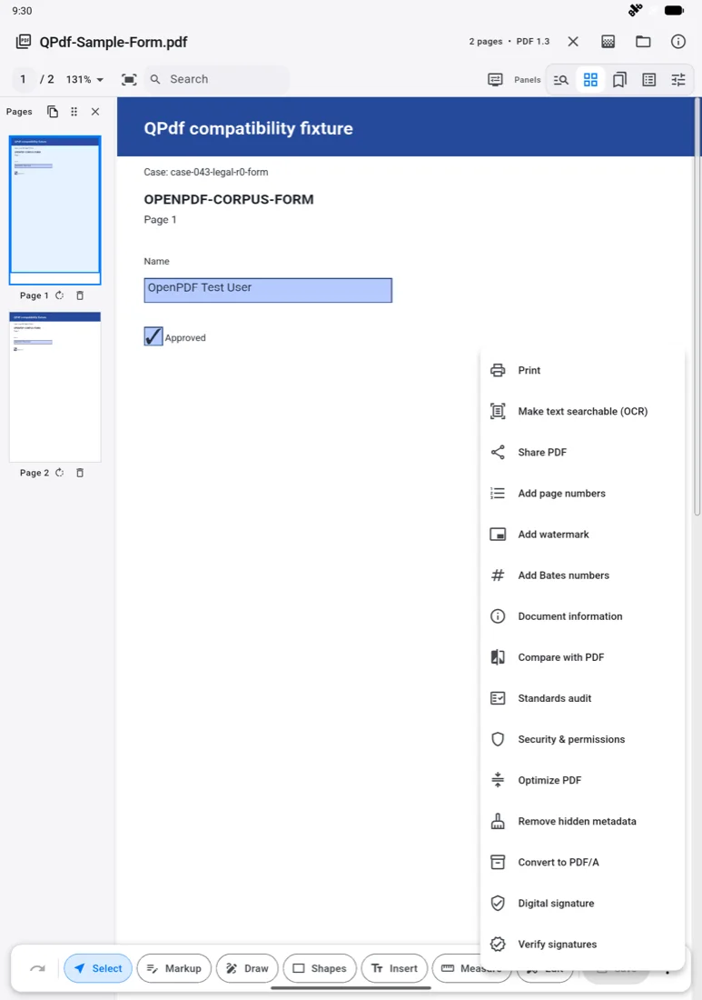
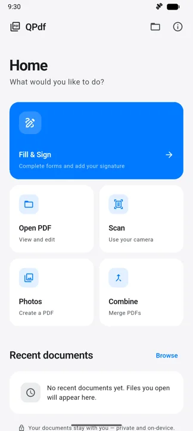
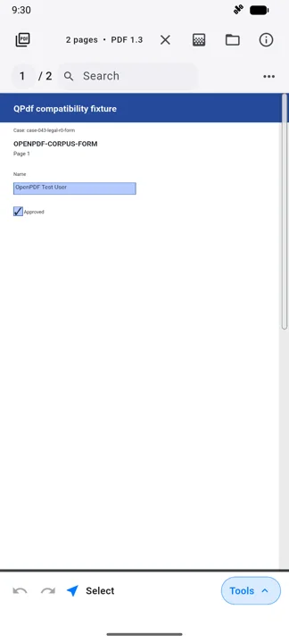
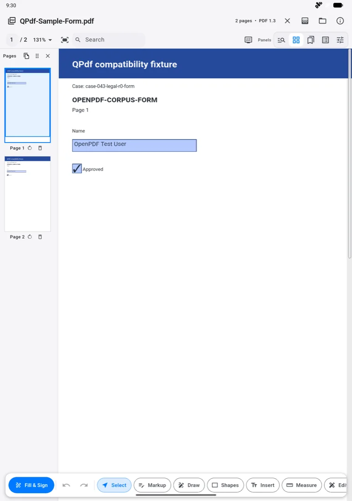

Read & search
Fast page rendering with text selection, in-document search, thumbnails, bookmarks and an outline panel. Large documents stay smooth on phone, tablet and desktop.
Free No account · No ads · No tracking
QPdf reads, annotates, fills, signs, organises, scans, OCRs and redacts your documents — entirely on your own device. No subscription, no watermark, nothing uploaded.


The toolkit
The tools professionals reach for — markup, forms, page surgery, OCR and real redaction — in one app that never asks you to sign in.
Fast page rendering with text selection, in-document search, thumbnails, bookmarks and an outline panel. Large documents stay smooth on phone, tablet and desktop.
Type text anywhere on a page — scanned and flattened forms behave just like digital ones — then add a drawn signature, or apply and verify a cryptographic digital signature.
Highlight, underline, strike through, draw freehand, drop shapes, insert text and measure distances.
Reorder, rotate, extract, delete and merge. Add page numbers, Bates numbering or a watermark in one pass.
Capture paper with the camera or turn a batch of photos into a clean, shareable PDF.
Add a selectable, searchable text layer to a scan. The recognition model is downloaded once (about 21 MB, checksum-verified) and every page after that is processed locally.
Secure redaction writes an image-only copy: searchable text, interactive content, metadata and existing signatures are removed, not just covered with a black box.
Run a PDF/UA accessibility or PDF/A archiving audit, convert to PDF/A, optimize file size, inspect document information, compare two PDFs, review security and permissions, and remove hidden metadata before a file leaves your hands.
Private by architecture
Opening, rendering, searching, annotating, editing, signing, page operations, scanning and OCR all run on your device.
The one outbound request QPdf can make is the optional OCR model download, and only if you ask for OCR — no part of your document is included in it. Printing and sharing hand the file to your own operating system, only when you tap. Read the full privacy policy →
A look inside
One adaptive layout: a focused, task-first home on phones, and the full panel-driven editor on tablets and desktops.
Fill & Sign sits at the top of the home screen, with Open PDF, Scan, Photos and Combine one tap away. Recent documents keeps your last twelve files within reach — stored locally, contents never recorded.
A compact toolbar keeps page navigation, search and undo within thumb reach, while Tools expands to the full editing set when you need it.

OCR, share, page numbers, watermarks, Bates numbering, document comparison, standards audits, permissions, optimisation, metadata removal, PDF/A conversion and digital signatures — all local.
Page thumbnails, panels, zoom control and a full markup rail — Select, Markup, Draw, Shapes, Insert, Measure and Edit — with Fill & Sign always one tap away.

How it works
Pick a PDF, scan paper with the camera, or build one from photos. QPdf only ever sees the items you choose.
Annotate, fill, sign, reorganise, OCR or redact. Every operation runs on your device, with undo behind it.
Write the file back where it came from, or hand it to your system print and share sheet — only when you ask.
Everywhere you work
QPdf is a single Flutter application that adapts to phone, tablet, desktop and browser rather than shipping a cut-down mobile edition.
Questions
Everything here is also covered, in more detail and in plainer legal terms, in the privacy policy.
Store releases for Google Play and the App Store are in preparation. Until they land, the source and the current builds live on GitHub.
Android · iOS · iPadOS · macOS · Windows · Linux · Web